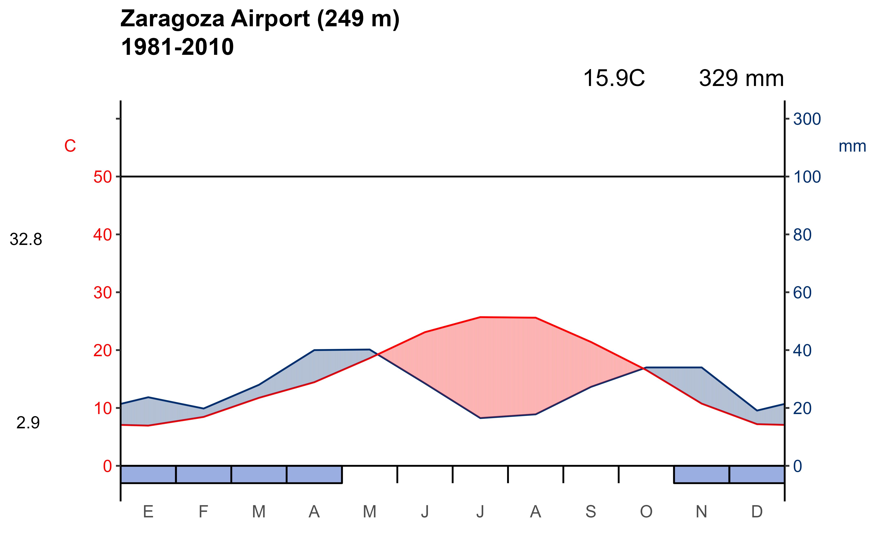
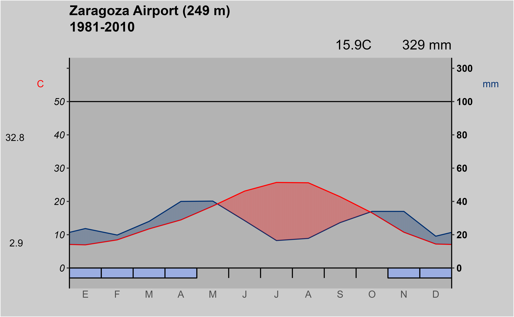

Plot of a Walter and Lieth climatic diagram of a station. This function is
an updated version of climatol::diagwl(), by Jose A. Guijarro.
![[Experimental]](figures/lifecycle-experimental.svg)
ggclimat_walter_lieth(
dat,
est = "",
alt = NA,
per = NA,
mlab = "es",
pcol = "#002F70",
tcol = "#ff0000",
pfcol = "#9BAEE2",
sfcol = "#3C6FC4",
shem = FALSE,
p3line = FALSE,
...
)Arguments
- dat
Monthly climatic data for which the diagram will be plotted.
- est
Name of the climatological station
- alt
Altitude of the climatological station
- per
Period on which the averages have been computed
- mlab
Month labels for the X axis. Use 2-digit language code ("en", "es", etc.). See
readr::locale()for info.- pcol
Color pen for precipitation.
- tcol
Color pen for temperature.
- pfcol
Fill color for probable frosts.
- sfcol
Fill color for sure frosts.
- shem
Set to
TRUEfor southern hemisphere stations.- p3line
Set to
TRUEto draw a supplementary precipitation line referenced to three times the temperature (as suggested by Bogdan Rosca).- ...
Other graphic parameters
Value
A ggplot2 object. See help("ggplot2").
Details
See Details on climatol::diagwl().
Climatic data must be passed as a 4x12 matrix of monthly (January to December) data, in the following order:
Row 1: Mean precipitation.
Row 2: Mean maximum daily temperature.
Row 3: Mean minimum daily temperature.
Row 4: Absolute monthly minimum temperature.
See climaemet_9434_climatogram for a sample dataset.
API Key
You need to set your API Key globally using aemet_api_key().
References
Walter, H., and Lieth, H. 1960. Klimadiagramm-Weltatlas. G. Fischer.
See also
climatol::diagwl(), readr::locale()
Other aemet_plots:
climatestripes_station(),
climatogram_normal(),
climatogram_period(),
ggstripes(),
ggwindrose(),
windrose_days(),
windrose_period()
Other climatogram:
climaemet_9434_climatogram,
climatogram_normal(),
climatogram_period()
Examples
library(ggplot2)
wl <- ggclimat_walter_lieth(
climaemet::climaemet_9434_climatogram,
alt = "249",
per = "1981-2010",
est = "Zaragoza Airport"
)
wl

# As it is a ggplot object we can modify it
wl + theme(
plot.background = element_rect(fill = "grey80"),
panel.background = element_rect(fill = "grey70"),
axis.text.y.left = element_text(
colour = "black",
face = "italic"
),
axis.text.y.right = element_text(
colour = "black",
face = "bold"
)
)
